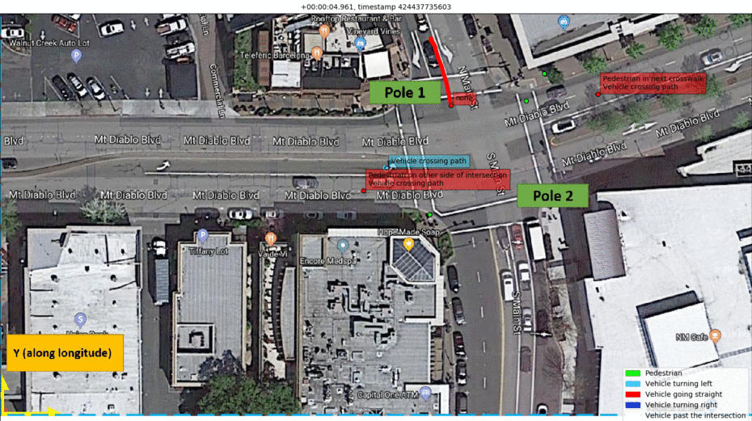

Control · Planning · Prediction · Localization
Projects
Selected work emphasizing robotics and control fundamentals, motion planning, prediction, state estimation, and real-system validation.
Stochastic Optimal Control, State Estimation & System Identification
UC Santa Cruz · M.S. ResearchAutonomously Driving Tricycle with Monocular Vision
- Formulated stochastic Dynamic Programming / HJB-style value iteration using robot-frame relative position and terminal heading, with 11 discrete turn-rate actions and minimum-time / control-effort objectives.
- Computed a 34,596-state policy and validated terminal success in 23/23 simulation tests; across 2,400 matched simulations, reduced mean arrival time by 2.2–4.9 s depending on the matched condition/baseline.
- Designed EKF and second-order nonlinear state estimators for pose, velocity, and heading under noisy monocular measurements.
- Performed system identification in V-REP/MATLAB using batch least squares and recursive least squares for discrete/continuous dynamic models.
Stochastic optimal-control policy and GPS-free navigation simulation.
Autonomous Forklift Motion Planning & Real-Robot Validation
Mobyus · 2024–2025Trajectory generation, path following, state estimation, docking, and closed-loop warehouse validation
- Generated Frenet/B-spline trajectories and validated path following on an autonomous forklift in real warehouse conditions.
- Integrated ESKF-based LiDAR–IMU localization and ROS 2 navigation so trajectory generation receives stable state estimates.
- Connected obstacle avoidance, pallet docking, perception support, and PLC-facing workflows into the autonomy stack.
- Used calibration, log analysis, trajectory comparison, timing/RMSE analysis, and failure diagnostics to reproduce and validate system behavior.
Autonomous forklift navigation and docking on real warehouse hardware.
Vehicle Trajectory Prediction & Critical-Scenario Reasoning
Continental-sponsored UCSC project · 2018–2019Real-road radar/camera environment-model data from a Walnut Creek intersection
- Processed temporal radar environment-model data and synchronized camera footage using timestamp, object ID, x/y position, velocity, heading, object type, and time-in-intersection features.
- Built trajectory labeling around crosswalk line-segment intersections to classify left, straight, and right movement intent.
- Evaluated classical ML and LSTM sequence models for driver-intent / trajectory prediction and critical-scenario reasoning.
- Team-reported best LSTM accuracy was 89.5% before intersection entry and 98.6% after entry.

Critical-scenario examples from the real intersection dataset.
Continental intelligent-intersection project overview.
Interaction-Aware Motion Coordination & Collision Avoidance
Applied R&DTrajectory-conflict reasoning, ETA / priority coordination, and simulation validation in shared regions
- Exchanged peer robot pose/path information for crossing, following, and facing interactions.
- Reasoned about path intersections and shared occupancy/conflict regions.
- Used ETA / priority and safety margins to coordinate per-robot target speed around conflict areas.
- Co-inventor, KR Application 10-2024-0041376 — V2V-based collision avoidance for autonomous mobile robots (pending / unexamined).
Public simulation demo; implementation source remains private.
Supporting localization & sensor-fusion work
Robust Prior-Map Localization with Calibrated LiDAR Intensity
Ongoing R&D- Built incident-angle/range-aware intensity calibration and keyframe-derived priormaps.
- Used 20×60 Intensity Scan Context for bounded candidate/yaw prescoring before small-GICP geometric acceptance, with intensity MAE/RMSE diagnostics for failure analysis.
Camera–LiDAR Integration & Visual-Aided LIO / VIO
Ongoing Prototype- Added synchronized RGB-D/depth-supported visual feature projection and keyframe persistence to the LIO pipeline.
- Implemented FOV/depth association, timing, confidence, conflict, and occlusion diagnostics while keeping LiDAR–inertial odometry as the authoritative pose backbone.